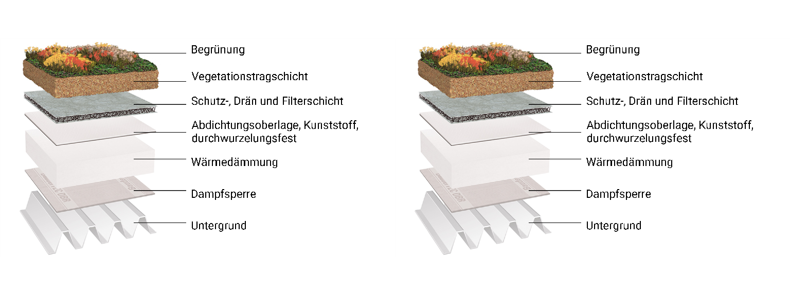

1 Kurzbeschreibung
Das ist eine Kurzbeschreibung
1.1 Kurzinformation
1.1.1 Kurzbeschreibung
N_004_Gründach
1.1.2 Umsetzungsbeispiel

| Ressource | ||||
|---|---|---|---|---|
| [x] Niederschlagswasser | [x] Schmutzwasser | [x] Baustoffe | [x] Energie | [x] Fläche |
| Wirkung/Funktion | ||
|---|---|---|
| Niederschlagswasser | [x] Gewässerschutz | [x] Bodenschutz |
| [x] Überflutungsschutz | [x] Klimaanpassung | |
| Schmutzwasser | [x] Gesundheitsvorsorge | [x] Gewässerschutz |
| [x] Trinwassereinsparung | [x] Nährstoffgewinnung | |
| Baustoffe | [x] BOM Bill of Material | [x] Monomaterial |
| [x] Einsparung von Primärmaterialien | [x] Nachwachsender Rohstoff | |
| [x] Rohstofferhalt | [x] Rohstoffverfügbarkeit | |
| [x] Rohstoffaufwand (gesamt) | ||
| Energie | [x] Elektrizität | [x] Erzeugung |
| [x] Wärme | [x] Verteilung | |
| [x] Brennstoffe | [x] Verbrauch |
1.2 Detailinformationen
1.2.1 Funktionsbeschreibung & Aufbau
Schmutzwasser
1.2.2 Systemskizze
1.2.3 Planung, Bemessung und rechtliche Aspekte
Wärme
1.2.4 Aufwand
Brennstoffe
1.2.5 Weitergehende Hinweise
Erzeugung
1.2.6 Ressourcenübergreifende Aspekte
1.2.7 Umsetzungsbeispiele
NA
1.2.8 Literatur
NA